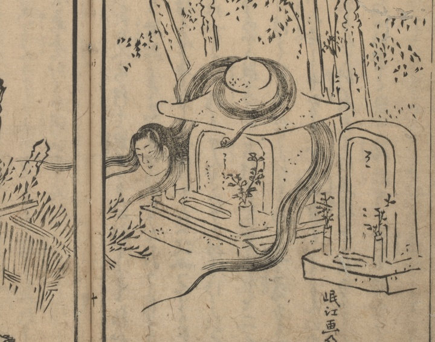

女；オンナ，首；クビ

夜に、髪の長い女の首が墓石のまわりを飛んでいる。
著作者：禿箒子著，橘岷江画／出典：親書誌：U426_nichibunken_0469：怪談國土産；カイダンクニミヤゲ／日付：2025／資源識別子：U426_nichibunken_0469_0007_0000
Copyright (c)2010- International Research Center for Japanese Studies, Kyoto, Japan. All rights reserved.